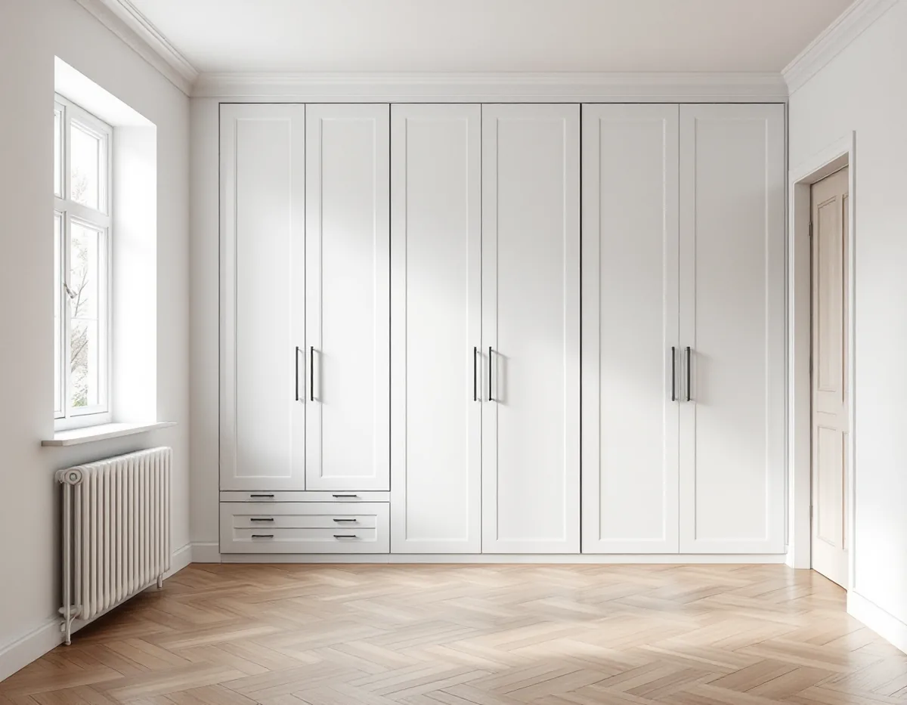
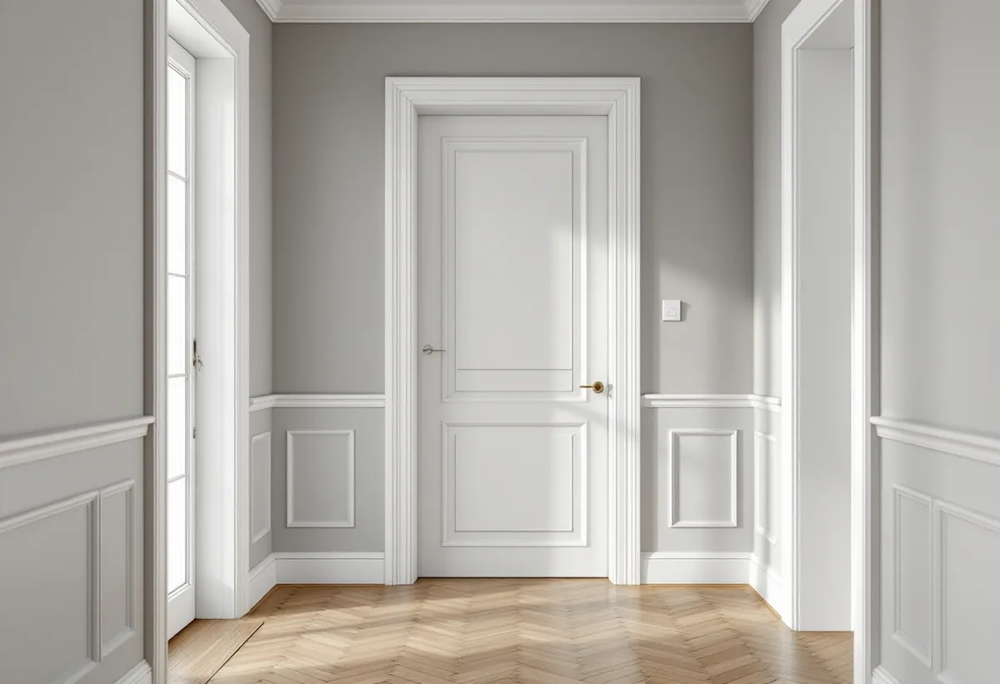

Platsbesök
Vi mäter rummen och ser på väggar, dörrar och golvets höjd.
De flesta bostäderna i Kista ligger i flerbostadshus, och två av tre av dem är bostadsrätter. Ska en vägg flyttas, en garderob byggas in eller innerdörrarna bytas sätter både föreningen och lagen ramarna. Geal Entreprenad AB bygger garderober, väggar, dörrar och listverk i lägenheter i Kista och Akalla, med gratis platsbesök och skriftligt kostnadsförslag.

Stadens områdesfakta räknar 5 318 bostäder i flerbostadshus i Kista 2025. Av dem är 3 565 bostadsrätter, 1 625 övriga hyresrätter och 128 lägenheter i allmännyttan. Till det kommer 971 bostäder i småhus. För den som vill ändra något i lägenheten är det upplåtelseformen som avgör vem som ska tillfrågas först.
Stockholms stad skriver att du i en hyresrätt normalt inte får göra ändringar som påverkar bärande konstruktion, brandskydd, ventilation eller vatten och avlopp, och att du i en bostadsrätt behöver tillstånd från föreningen. Staden råder dig att kontakta styrelsen i god tid innan åtgärden planeras.
Inredningssnickeriet är ofta det som går att göra utan stora ingrepp: en platsbyggd garderob, nya innerdörrar, foder och lister. Men en vägg som flyttas eller en dörröppning som tas upp kan snabbt bli en fråga för både styrelsen och staden.

Bostadsrättslagen säger i 7 kap. 7 § att du inte får utföra vissa åtgärder i lägenheten utan styrelsens tillstånd: ingrepp i en bärande konstruktion, installation eller ändring av ledningar för avlopp, värme, gas eller vatten, installation eller ändring av ventilation, installation eller ändring av eldstad eller rökkanal eller annan påverkan på brandskyddet, och någon annan väsentlig förändring av lägenheten.
Har lägenheten särskilda historiska, kulturhistoriska, miljömässiga eller konstnärliga värden krävs tillstånd för varje åtgärd som påverkar ett sådant värde. Styrelsen får vägra bara om åtgärden är till påtaglig skada eller olägenhet för föreningen, och ett tillstånd får förenas med villkor. Är du missnöjd med beslutet kan du begära att hyresnämnden prövar frågan.
Stockholms stad uppmanar dig också att informera grannar eller styrelsen om vad du planerar. Vi hjälper gärna till med en ritning och en kort beskrivning av arbetet som underlag till styrelsen, så att den vet exakt vad som ska göras och hur länge det pågår.
Ändrar du planlösningen inom lägenheten utan att något tekniskt egenskapskrav påverkas behövs ingen anmälan, enligt Stockholms stad. Påverkas däremot den bärande konstruktionen, brandskyddet, ventilationen eller vatten och avlopp krävs anmälan, och arbetet får inte börja förrän du har fått startbesked. Delar du en lägenhet till två krävs bygglov, eftersom det skapar ytterligare en bostad. Att flytta eller bygga ut kök eller badrum inom lägenheten kräver ingen anmälan så länge inget tekniskt egenskapskrav påverkas, men andra anmälningspliktiga delar kan följa med.
Om väggen bär kan du få en första bild av husets ritningar, som går att se i stadens e-tjänst Bygg- och plantjänsten. Staden varnar för att ritningar kan vara ofullständiga och att det inte är säkert att de som byggde följde dem. Staden kan inte heller bedöma åt dig om ändringen rör den bärande konstruktionen, utan hänvisar till en konstruktör när du är osäker.
En platsbyggd garderob tar vara på en nisch, en hall eller en vägg där köpta möbler inte passar. Vi bygger stommen efter rummets verkliga mått, så att skåpet går ända upp till taket och följer golvet. Nya innerdörrar handlar ofta om karmar som har satt sig eller trösklar som behöver ändras efter ett golvbyte.
Foder och lister binder ihop en ny vägg eller dörr med resten av lägenheten. Ska köket göras om samtidigt finns mer under köksrenovering i Kista, och golvet efter ett väggbyte tar vi hand om inom golvläggning.
Vi mäter rummen och ser på väggar, dörrar och golvets höjd.
Husets ritningar hämtas, och vid osäkerhet om bärande delar tar vi in en konstruktör.
Ritning och beskrivning lämnas till föreningen när tillstånd behövs.
Vägg, garderob, dörrar och lister redovisas var för sig.
Stommar, skåp, dörrar och foder byggs och monteras på plats.
Vi går igenom resultatet med dig och lämnar mått på skåp och dörrar.
I en bostadsrätt ska arbetet göras innanför bostadens tak, väggar och golv och gälla det som du ansvarar för enligt föreningens stadgar. Skatteverket ger då avdrag för att montera platsbyggda garderober och bokhyllor, riva innerväggar och bygga om planlösningen, byta och reparera innerdörrar, byta och reparera innerfönster och fönsterfoder och arbeta på insidan av ytterdörren.
Att byta ytterdörr, arbeta i trapphus och entréer eller bygga om en balkong ger inget avdrag. Avdraget är 30 procent av arbetskostnaden, högst 50 000 kr per person och år och högst 75 000 kr tillsammans med rutavdrag. Material och resor ingår inte, och Geal drar avdraget direkt på fakturan.
Hur stora skåpen blir, om en vägg ska rivas eller byggas och hur många dörrar och foder som byts väger tyngst. Platsbesöket är gratis och du får ett skriftligt kostnadsförslag.
Altan, väggar, dörrar och inredning.
Snickare i Stockholm →Takbyte, takbesiktning och plåtarbeten.
Takläggare i Kista →Låga tak, tätskikt och takbrunnar från 1970-talet.
Takrenovering i Kista →Gårdshus vid radhus och villor.
Attefallshus i Kista →Radhusen, föreningen och ventilationen.
Badrumsrenovering i Kista →Uterum, altan och föreningens tillstånd.
Byggföretag i Kista →Radhus, atriumhus och husgruppen.
Fasadmålning i Kista →Panel, skivor och isolering på radhus.
Fasadrenovering i Kista →Radhus och villor från 1970-talet.
Fönsterbyte i Kista →1970-talets radhusfönster.
Fönsterrenovering i Kista →Nya golv på betong i radhus och lägenheter.
Golvläggare i Kista →Golvslipning i bostadsrätt, hyresrätt och radhus.
Golvslipning i Kista →Småhus i förening och kök från 1970-talet.
Köksrenovering i Kista →1970-talets hus, asbest och ROT.
Målare i Kista →Rännor, stuprör och beslag.
Plåtslagare i Kista →Platta tak och pulpettak.
Takbyte i Kista →Lägenheter och radhus från 1970-talet.
Tapetsering i Kista →Tillbyggnad vid radhus och villor.
Tillbyggnad i Kista →Renovera hela huset eller lägenheten.
Totalrenovering i Kista →